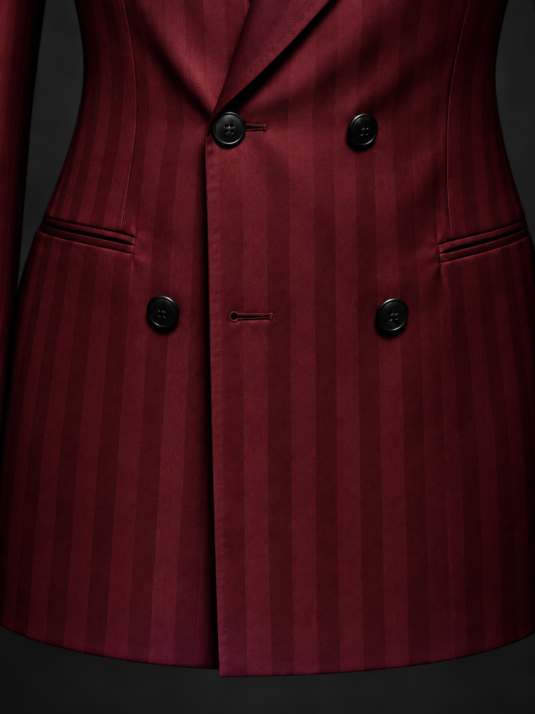
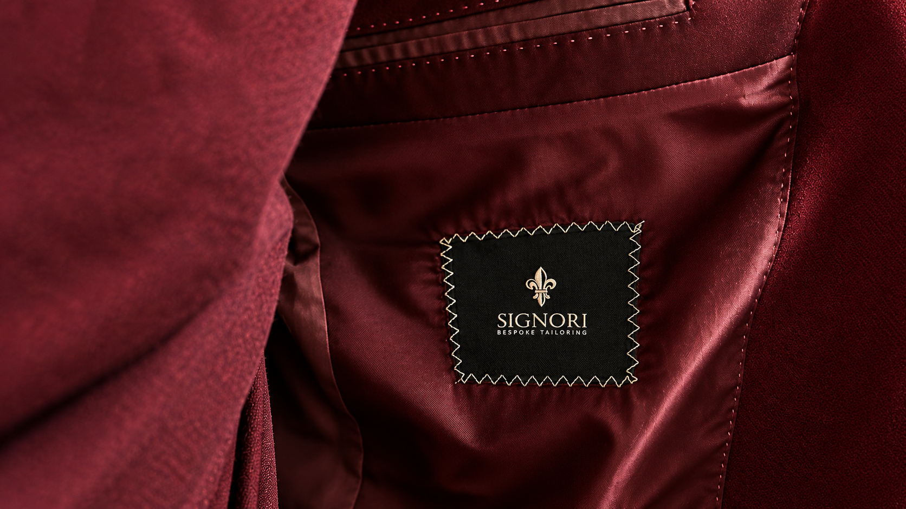

Distinctive in every detail. Explore the considered elements that define the character, precision and finish of a SIGNORI garment.
IT IS THE FINEST DETAILS THAT DEFINE THE CHARACTER, PRECISION AND TIMELESS ELEGANCE OF EVERY SIGNORI GARMENT.
Every detail has a purpose, from the carefully selected buttons and refined buttonholes to the precise lines of the lapels and cuffs. These subtle elements bring balance, character and distinction to each garment, reflecting a thoughtful approach to design where nothing is overlooked. At SIGNORI, true elegance lies not only in the overall silhouette, but in the details that make every piece feel complete.

The pocket is more than a functional detail; it is an essential part of the jacket’s overall composition. Defined by precise placement and clean lines, it brings balance and structure to the silhouette, reflecting the understated elegance of SIGNORI tailoring.
Every detail reflects the art of fine tailoring, from the precision of each stitch to the rich texture of the fabric. Carefully crafted lapels, refined proportions, and subtle finishing touches come together to create a timeless expression of elegance, sophistication, and true craftsmanship.
